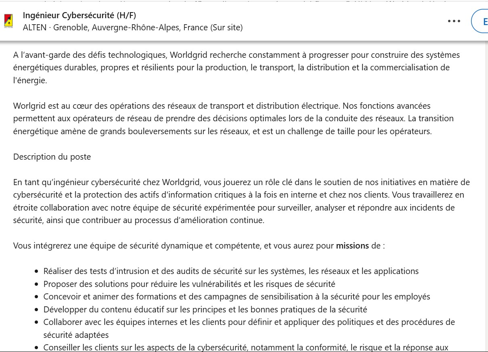
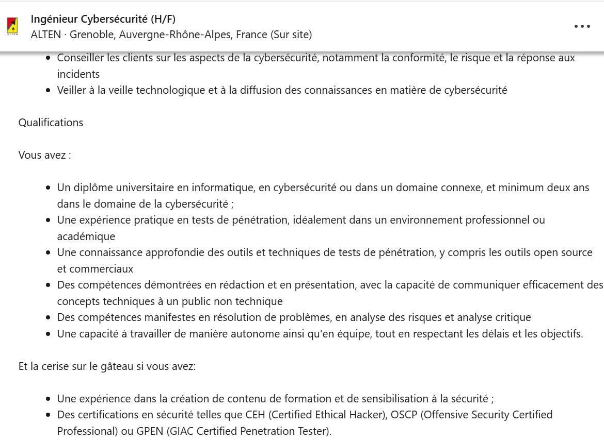
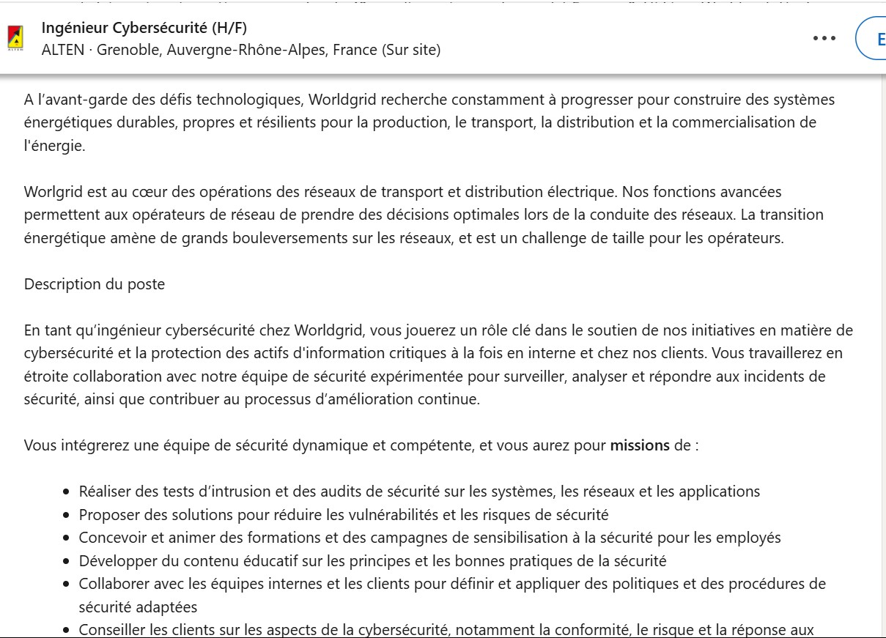
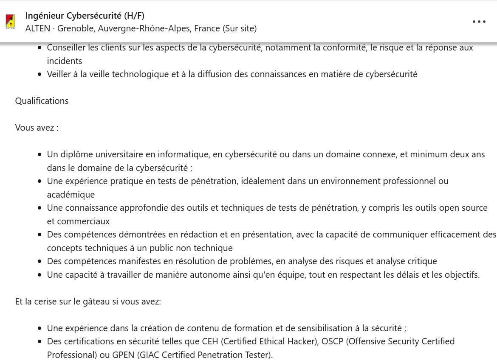

| Web : HTML, CSS |
Création de sites web |
Créativité, pensée critique, résolution de problème |
BUT, BAC |
| Programmation : C, Python |
Création de solutions techniques d'automatisation de tâches, interaction avec des bases de données |
Rigueur, persévérance, prise de recul, créativité, résolution de problème |
BUT, BAC, CS50's Introduction to Computer Science (Harvard Online Course) |
| Réseaux - Configuration des appareils réseau |
Configuration des routeurs, switchs, et autres équipements réseau |
Autonomie, rigueur, prise d'initiative |
BUT |
| Réseaux - Gestion des adresses IP |
Attribution, gestion et planification des plages d'adresses IP |
Rigueur, précision |
BUT |
| Réseaux - Services DNS et DHCP |
Création et gestion des services DNS et DHCP |
Prise d'initiative, autonomie |
BUT |
| Réseaux - Protocoles SSH et communication inter-machines |
Configuration des connexions sécurisées SSH, communication inter-machines sur Internet |
Rigueur, Autonomie |
BUT |
| Réseaux - Installation et gestion des systèmes d'exploitation |
Installation et configuration de systèmes d'exploitation sur des serveurs et ordinateurs |
Autonomie, gestion de l'urgence, prise de décision |
BUT |
| Réseaux - Gestion des droits NTFS |
Configuration des droits d'accès sur les systèmes Windows via NTFS |
Précision, rigueur |
BUT |
| Réseaux - Création d'architectures pour petites entreprises |
Conception de solutions réseau pour des entreprises de taille modeste |
Créativité, organisation, gestion de projet, travail en équipe, coordination, résilience, souci du service
client |
BUT |
| Réseaux - Fragmentation de paquets IP |
Gestion de la fragmentation des paquets pour assurer une communication efficace sur Internet |
Rigueur, précision technique |
BUT |
| Bonne pratique en sécurité |
Application des principes de sécurité dans la gestion des systèmes et des réseaux |
Rigueur, vigilance, travail en équipe, jugement |
BUT, MOOC de l'ANSSI |
| Shell |
Utilisation de scripts Shell pour l'automatisation des tâches système |
Précision, persévérance, résolution de problème |
BUT |
| SQL |
Utilisation de SQL pour la gestion de bases de données relationnelles, création de tables, manipulation de
données (INSERT, UPDATE, DELETE), utilisation des jointures (JOIN), gestion des clés primaires et
étrangères.
|
Compréhension, persévérance, rigueur, logique, pensée critique |
BAC |
 


